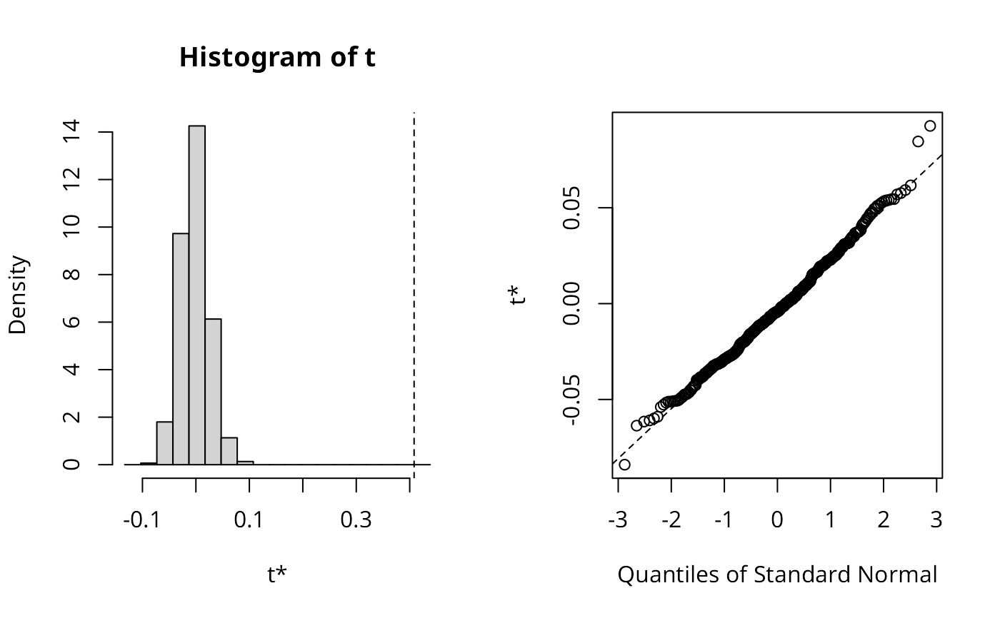
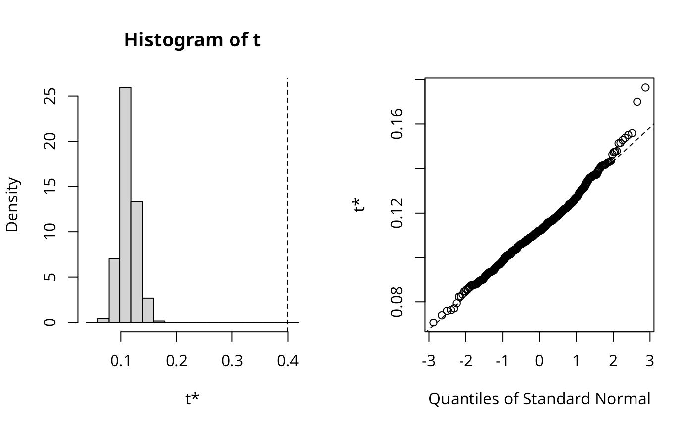
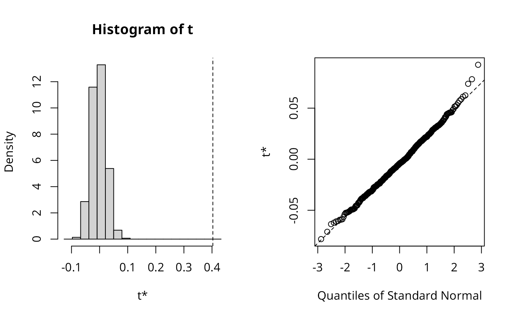

Compute the Global Bivariate Moran's I
moran_bv.RdGiven two continuous numeric variables, calculate the bivariate Moran's I. See details for more.
Arguments
- x
a numeric vector of same length as
y.- y
a numeric vector of same length as
x.- listw
a listw object for example as created by
nb2listw().- nsim
the number of simulations to run.
- scale
default
TRUE.
Details
The Global Bivariate Moran is defined as
\( I_B = \frac{\Sigma_i(\Sigma_j{w_{ij}y_j\times x_i})}{\Sigma_i{x_i^2}} \)
It is important to note that this is a measure of autocorrelation of X
with the spatial lag of Y. As such, the resultant measure may overestimate the amount of
spatial autocorrelation which may be a product of the inherent correlation of X and Y. The output object is of class "boot", so that plots and confidence intervals are available using appropriate methods.
References
Wartenberg, D. (1985), Multivariate Spatial Correlation: A Method for Exploratory Geographical Analysis. Geographical Analysis, 17: 263-283. doi:10.1111/j.1538-4632.1985.tb00849.x
Author
Josiah Parry josiah.parry@gmail.com
Examples
data(boston, package = "spData")
x <- boston.c$CRIM
y <- boston.c$NOX
listw <- nb2listw(boston.soi)
set.seed(1)
res_xy <- moran_bv(x, y, listw, nsim=499)
res_xy$t0
#> [1] 0.4082073
boot::boot.ci(res_xy, conf=c(0.99, 0.95, 0.9), type="basic")
#> BOOTSTRAP CONFIDENCE INTERVAL CALCULATIONS
#> Based on 499 bootstrap replicates
#>
#> CALL :
#> boot::boot.ci(boot.out = res_xy, conf = c(0.99, 0.95, 0.9), type = "basic")
#>
#> Intervals :
#> Level Basic
#> 99% ( 0.7443, 0.8789 )
#> 95% ( 0.7639, 0.8673 )
#> 90% ( 0.7739, 0.8615 )
#> Calculations and Intervals on Original Scale
#> Some basic intervals may be unstable
plot(res_xy)

set.seed(1)
lee_xy <- lee.mc(x, y, listw, nsim=499, return_boot=TRUE)
lee_xy$t0
#> [1] 0.3993476
boot::boot.ci(lee_xy, conf=c(0.99, 0.95, 0.9), type="basic")
#> BOOTSTRAP CONFIDENCE INTERVAL CALCULATIONS
#> Based on 499 bootstrap replicates
#>
#> CALL :
#> boot::boot.ci(boot.out = lee_xy, conf = c(0.99, 0.95, 0.9), type = "basic")
#>
#> Intervals :
#> Level Basic
#> 99% ( 0.6363, 0.7236 )
#> 95% ( 0.6538, 0.7131 )
#> 90% ( 0.6584, 0.7098 )
#> Calculations and Intervals on Original Scale
#> Some basic intervals may be unstable
plot(lee_xy)

set.seed(1)
res_yx <- moran_bv(y, x, listw, nsim=499)
res_yx$t0
#> [1] 0.4029821
boot::boot.ci(res_yx, conf=c(0.99, 0.95, 0.9), type="basic")
#> BOOTSTRAP CONFIDENCE INTERVAL CALCULATIONS
#> Based on 499 bootstrap replicates
#>
#> CALL :
#> boot::boot.ci(boot.out = res_yx, conf = c(0.99, 0.95, 0.9), type = "basic")
#>
#> Intervals :
#> Level Basic
#> 99% ( 0.7301, 0.8729 )
#> 95% ( 0.7574, 0.8584 )
#> 90% ( 0.7664, 0.8541 )
#> Calculations and Intervals on Original Scale
#> Some basic intervals may be unstable
plot(res_yx)

set.seed(1)
lee_yx <- lee.mc(y, x, listw, nsim=499, return_boot=TRUE)
lee_yx$t0
#> [1] 0.3993476
boot::boot.ci(lee_yx, conf=c(0.99, 0.95, 0.9), type="basic")
#> BOOTSTRAP CONFIDENCE INTERVAL CALCULATIONS
#> Based on 499 bootstrap replicates
#>
#> CALL :
#> boot::boot.ci(boot.out = lee_yx, conf = c(0.99, 0.95, 0.9), type = "basic")
#>
#> Intervals :
#> Level Basic
#> 99% ( 0.6363, 0.7236 )
#> 95% ( 0.6538, 0.7131 )
#> 90% ( 0.6584, 0.7098 )
#> Calculations and Intervals on Original Scale
#> Some basic intervals may be unstable
plot(lee_yx)